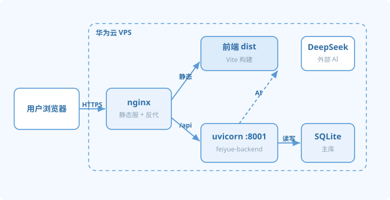
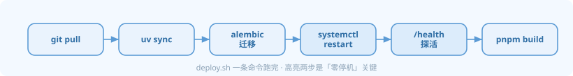
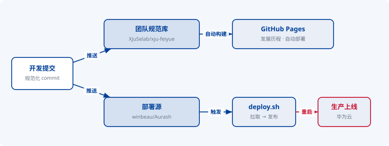
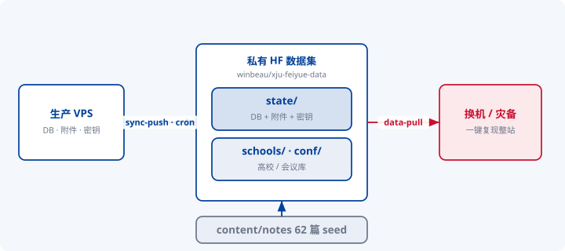
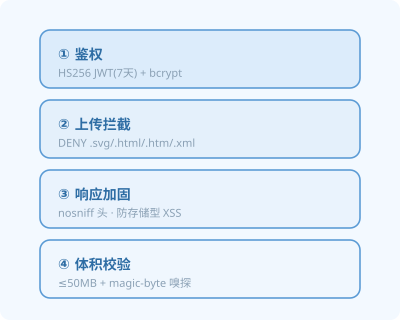
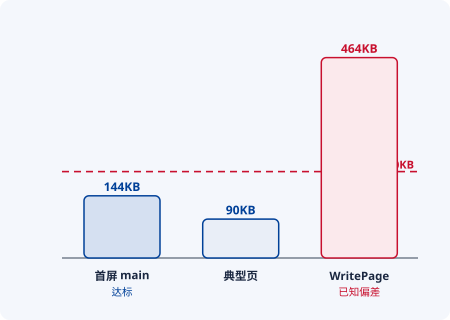

讲者 E 负责 S13–S16 共 4 页 · 工程项目开发综合实践 · 飞跃手册
四页分别采用拓扑 / 流水线 / 环路 / 分栏四种版式；配图为 #004098 藏青 + 红点缀 的 SVG，文件位于 docs/ppt-figures/，可直接插入 PPT。
aurash-backend.service，本仓库 deploy.sh 实为 feiyue-backend.service（:8001），部署源在 winbeau/Aurash，请以生产实际为准（图按 feiyue-backend 绘制）。
② 规模数字（≈182 commits / 62 seed / 144KB）取自大纲既有口径，建议临答辩前复核。平台以单台华为云 VPS 承载全部线上服务，架构核心在于 nginx 的双重职责——对前端构建产物直接分发，对 /api 请求反向代理至后端；后端进程由 systemd 托管，实现开机自启与故障自愈的进程级可用性。发布流程收敛为单一脚本，并以健康探活作为上线闸门，达成可重复、低风险的部署。


deploy.sh 串行六步；重启与探活构成上线闸门dist 作静态资源直接分发，同时把 /api 反向代理到后端；后端是 FastAPI，用 uvicorn 跑在 8001 端口，由 systemd 托管，开机自启、崩溃自愈。上线只需一条 deploy.sh：拉取主分支、同步依赖、迁移数据库、重启服务、健康探活、再构建前端。winbeau.top 为主域名，feiyue.selab.top 为镜像。面向多人协作，代码库通过双库分工与提交前静态检查维持有序：规范库承载文档、规范与源码评审，部署源承载生产实际运行代码，二者职责隔离；每次提交先经本地检查门禁校验提交规范，通过后方进入发布流水线，从而保证提交历史的一致性与可追溯性。

| 团队规范库 · XjuSelab/xju-feiyue | 部署源 · winbeau/Aurash | |
|---|---|---|
| 职责 | 文档 / 规范 / 源码评审 | 生产实际运行代码 |
| 下游 | GitHub Pages「发展历程」时间轴自动部署 | deploy.sh 拉取 → 华为云上线 |
| 门禁 | conventional commits（feat/fix/docs…）+ Husky + lint-staged 提交前静态检查 | |
数据持久性是运维的首要约束。系统将数据库、用户上传附件与密钥统一同步至私有 HuggingFace 数据集实现异地留存，并按命名空间隔离「实时状态」与「参考数据」，避免相互干扰；面向换机与故障场景，单条命令即可完成整站数据的恢复复现，显著降低单点丢失风险。

make sync-push 定时 cron 完成；一旦换机或灾备，一条 make data-pull 即可拉回整站数据复现。内容真源为 62 篇 seed，加上站内用户直接发布的笔记。
其中以双重机制抑制存储型 XSS：上传阶段按扩展名实施准入拦截，静态响应阶段统一注入 nosniff 头，二者互为兜底。

首屏 JS gzip 后约 144KB 并全路由懒加载；AI 欢迎语缓存 3h 轮换摊薄外部调用。WritePage 因集成编辑器、字级 diff 与公式渲染超出预算，已作为已知偏差披露。
—— 四页四版式 · 6 张 #004098 SVG 位于 docs/ppt-figures/ · 直接插入 PPT ——